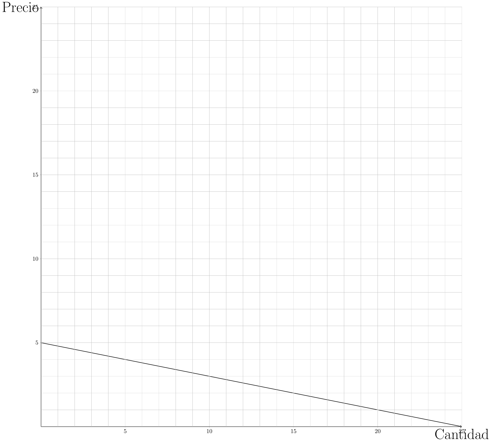

7 Ejercicios propuestos:
7.1 Sobre capítulo I:
7.1.1 :
- A causa de las constantes enfermedades pulmonares y riesgos para la salud, el gobierno decide aumentar el impuesto al tabaco. Como consecuencia de esto, un 37% de los fumadores deja este vicio y hay un 45% menos de enfermedades relacionadas al uso de esta ¿Qué principio esta relacionado con este cambio económico?
- Dado que bajaron las enfermedades y que el estado logró recaudar más dinero por el aumento del impuesto anterior, el gobierno decide aumentar más aún el impuesto a este bien de consumo. Esta vez, aumento el mercado negro de este servicio y junto a esto, el estado recaudó menos y por la mala calidad del tabaco traficado aumento un %15 las enfermedades relacionadas a este habito. ¿Qué principio es el que esta relacionado con este nuevo cambió?
- Ahora, un comprador cualquiera de cigarrillos al ver que subieron los impuestos, tiene que decidir entre comprar una cajetilla o comprar la revista que compra todos los domingos ¿Que principio es el que se relaciona a esta situación?
7.1.2 :
Con respecto al modelo de economía circular. 1) ¿Qué demandan los hogares? 2) ¿Qué demandan las empresas? 3) ¿Qué ofrecen los hogares? 4) ¿Qué ofrecen las empresas?
7.1.3 :
Tenemos que un pastelero tiene como insumo limitante 100 huevos, para hacer un pie de limón gasta 10 huevos, mientras que para hacer un kg de pan gasta 5 huevos. 1) si quiere hacer 3 pie de limón, cuanto es la máxima cantidad de pan que puede hacer. 2) exprese la situación en la forma matemática \(\bar x=a_1y_1+a_2y_2\). 3) Haga un gráfico de la situación. 4) Ahora, digamos que le llegaron más huevos y le alcanzó para hacer 15 pie de limón y 15 kg de pan, cuantos huevos más tiene.
7.1.4 :
Un productor “\(A\)” de chocolate tiene como factor limitante el cacao, si quiere producir chocolate dulce necesita “\(c\)” de este bien por cada kg y si quiere producir chocolate amargo necesita “\(d\)” de este bien por cada kg. Para gastar todo su cacao necesita producir “\(e\)” kg de chocolate dulce y “\(f\)” de chocolate amargo.
- Haga la ecuación que represente kas FPP.
- Haga el gráfico de esta ecuación.
7.2 Sobre capítulo II:
7.2.1 :
Calcule el precio Demandado (\(P\)) de un bien para una producción de 5 unidades (\(Q=5\)). Usted sabe que si no se producen unidades el precio demandado es de $5000. Adicionalmente, usted sabe que la función de demanda es lineal de la forma: \(P(Q)=a-250Q\)
Calcule la función inversa de demanda para \(P(Q)=a-bQ\)
Asuma una función de demanda igual a \(P(Q)=a-235Q\). Si Usted sabe que 10 unidades se valoran a un precio de 7650, ¿Cuál sería el precio de referencia si no se produce nada?
###: Grafique las siguientes demandas:
\[ P(Q)=\$10 - 1Q \]
\[ P(Q)=\$12 - 2Q \]
\[ P(Q)=\$50 - 2.5Q \]
7.2.2 :
Calcule la función demanda de los siguiente gráficos. 1)


7.2.3 :
Tenemos una empresa forestal con las siguientes funciones de demanda y oferta: \[ P_d(Q)=100-3Q \] \[ P_o(Q)=60+2Q \]
Por causas naturales una de los cultivos se incendiaron, dejando como nuevo punto de equilibrio \((4,88)\). Haga un gráfico del caso luego del evento y calcule la elasticidad.
7.3 Sobre el capítulo III:
7.3.1 :
Una empresa de dulces tiene como función de oferta: \(P(Q)=1+Q\) Y como función de demanda: \(P(Q)=5-Q\), se le agrega un impuesto al productor de $1, calcule su peso muerto, el excedente al consumidor, lo recaudado por el gobierno y haga un gráfico de la situación.
7.3.2 :
Tenemos una empresa de computadores con función de demanda \(P_d(Q)=30-3Q\) y de oferta \(P(Q)=5+2Q\), debido a la pandemia se hace un subsidio de $6 a los estudiantes para que puedan conectarse a sus clases. Haga un gráfico de la situación y calcule el excedente del productor y del consumidor.
7.3.3 :
Argentina por razones populistas, antes de las elecciones decidido fijar los precios de algunos bienes. A base de esto en un pueblo imaginario tiene el mercado del queso como funciones de oferta y demanda respectivamente \(P(Q)=1.5+0.5Q\) y \(Q(P)=5-P\). La fijación al precio máximo de este bien es de $2. ¿Qué fenómeno ocurrirá debido a esta intervención? Haga un gráfico de la situación.
7.3.4 :
China tiene un mercado de chips con las siguientes funciones de oferta y demanda, con \(P\) en dolares: \[ P(Q)=120+6Q \, Q(P)=50-0.125P \]
Si el precio mundial es de $300 y este país decide exportar ¿Cuanto es lo que tendrá de beneficio este país en dolares por la exportación. Grafíque la situación.
7.3.5 :
El merado se zapatos en chile esta dado por las funciones de oferta y demanda en dolares y unidades: \[ \begin{array}{cc}P(Q)=5+1.5Q, & Q(P)=5.2-\frac{2}{5}P\\\end{array} \]
Además, el precio mundial de estos zapatos es de $5 por unidad y se tiene un arancel de $1.
Grafique la situación, calcule el excedente del productor local, el peso muerto y prediga que pasaría para los consumidores y productores locales si se quita este arancel.
7.4 Sobre capítulo IV:
7.4.1 :
Reconozca la externalidad y su tipo, es decir, si es positiva o negativa, en los siguientes casos y proponga en que caso podría ser bueno aplicar un impuesto o un subsidio.
- Una empresa de textiles sintéticos que da una alta taza de empleo en la zona contamina las aguas de los ríos cercanos. \
- Una empresa forestal imaginaria de monocultivo en la provincia del Malleco erosiona los suelos, esta produce un 15% del PIB nominal de Chile. \
- Un criadero de caballos usados para deportes nacionales amansa a las crías en conjunto a una clínica que usa a estos para terapia. \
- Una fundación para ancianos tiene una buena administración, pero no tiene los suficientes recursos para calefacción. \
7.4.2 :
Para un mercado de libros tenemos las siguientes funciones de oferta y demanda:
\[ \begin{array}{cc} P(Q)=5+2Q & Q(P)=15-P\\\end{array} \]
Calcule cuanto es la máxima recaudación posible teniendo en cuenta la curva de Laffer.
7.4.3 :
Defina con sus palbras los siguintes terminos: 1) Déficit presupuestario: 2) Superávit presupuestal: 3) Equidad horizontal: 4) Equidad vertical: 5) Impuestos proporcionales: 6) Impuestos regresivos: 7) Impuestos progresivos:
7.4.4 :
Un mercado no regulado, está constituido por un solo productor y varios compradores, tiene de funciones de oferta y demanda \(P(Q)=1+Q\) y \(P(Q)=5-Q\) respectivamente. El productor se corrompió y decidió aprovecharse del mercado y obtener el máximo beneficio posible. ¿Cuánto será su excedente?
7.4.5 :
Una empresa tiene la siguiente función de producción: \[ Q(K,L)=K^3+2K^2+KL^2+L^3 \]
En el mercado de la empresa, cada unidad producida es vendida por $3 dólares.
Determine la función de la producción media de trabajo.
Determine la función del producto marginal del capital.
Asuma un \(\bar{K}=1\) y una cantidad de trabajadores \(\bar{L}=2\) ¿Cuánto es el retorno del trabajo?
7.4.6 :
Tenemos la siguiente tabla que representa el porcentaje de población acumulado de la población según su ingreso porcentual acumulado:
| decil: | Ingresos: |
| 0.1 | 0.01 |
| 0.2 | 0.02 |
| 0.3 | 0.03 |
| 0.4 | 0.06 |
| 0.5 | 0.1 |
| 0.6 | 0.15 |
| 0.7 | 0.28 |
| 0.8 | 0.39 |
| 0.9 | 0.5 |
| 1 | 1 |
Calcule la desigualdad con el coeficiente de Gini.
Grafique la curva de Lorenz.
7.4.7 :
Tenemos la siguiente función de producción: [Q(K,L)=7K2L3-3K^3L]
Calcule las siguientes medidas de forma genérica y calcule según el tipo de media la utilidad si cada producción vale $2 dolares o el tipo de retorno evaluándolas con \(\bar{K}=1\) y un \(\bar{L}=2\):
¿Para qué valor de \(L\), con \(\bar{K}=2\) el retorno de capital es una constante a escala?
7.5 Sobre capítulo VI:
7.5.1 :
En Loompalandia tienen las siguientes producciones totales de los distintos mercados en los distintos años, todo evaluados en su nueva moneda wonkas (wk'') y su cantidad en unidades (u’’), admeás su producción fue siempre la misma, es decir la misma cantidad:
| Bien de consumo: | 2016 | 2017 | 2018 | 2019 |
| Producción de cacao: | 2u, 100wk | 2u, 98wk | 2u, 102wk | 2u, 100wk |
| Venta de azúcar importado: | 1u, 33wk | 7u, 12wk | 15u, 22wk | 26u, 25wk |
| Producción de caramelos: | 4u, 11wk | 3u, 17wk | 5u, 19wk | 4u, 21wk |
| Venta de envoltorios de Reino Unido: | 3u, 3wk | 3u, 3wk | 3u, 2wk | 4u, 3wk |
| Producción de chicle: | 6u, 33wk | 6u, 37wk | 5u, 39wk | 6u, 44wk |
| Producción de turrones: | 4u, 78wk | 5u, 81wk | 5u, 88wk | 5u, 98wk |
| Venta de plátano local: | 7u, 10wk | 8u, 12wk | 8u, 15wk | 9u, 18wk |
- Calcule le inflación anual, con año base 2016, de los años 2017, 2018 y 2019.
- Si un umpalumpa pone a deposito a plazo 100 wonkas con un interes del 20% en el año 2016 hasta el año 2019 e indexamos su valor al los wonkas del año 2016 ¿Cuántos wonkas tiene?
7.5.2 :
Con los datos del banco mundial y el SII, pudimos elaborar la siguiente tabla:
::: {.content-visible when-format=“pdf”}
::: {.content-visible when-format=“html”}
| Año | Inflación anual de Angola | Conversión enero 1UF a CLP | Conversión enero 1US a CLP | Conversión enero 1US a KZ |
| 2018 | $19,8\%$ | $\$26800$ | $\$640$ | $253$Kz. |
| 2019 | $17,1\%$ | $\$27565$ | $\$703$ | $365$Kz. |
| 2020 | $22,3\%$ | $\$28310$ | $\$793$ | $578$Kz. |
| 2021 | $25,8\%$ | $\$29070$ | $\$760$ | $631$Kz. |
| 2022 | No influye en el ejercicio | $\$31000$ | $\$873$ | $460$Kz. |
Usted decide el 2018 poner a deposito a plazo por cuatro años un millón de Kwanzas angoleñas a un banco que da una tasa de interés del 20% anual.
¿Cuántas kwansas tendrás al terminar los 4 años?
¿Cuánto es la inflación acumulada en los 4 años?
Si antes del deposito a plazo tenias los kwansas en UF e indexamos a UF lo invertido al terminar los 4 años ¿Cuántos UF teníamos al principio y al final?
¿De qué sirvió indexar a UF al principio y al final? ¿Por qué tomamos la referencia de la ganancia o perdida en UF y no en la inflación de Angola?